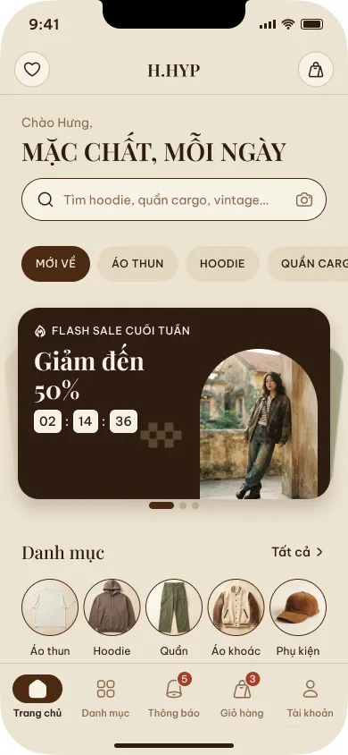
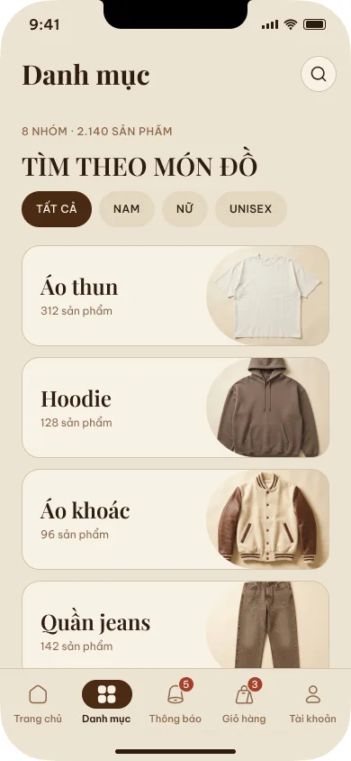
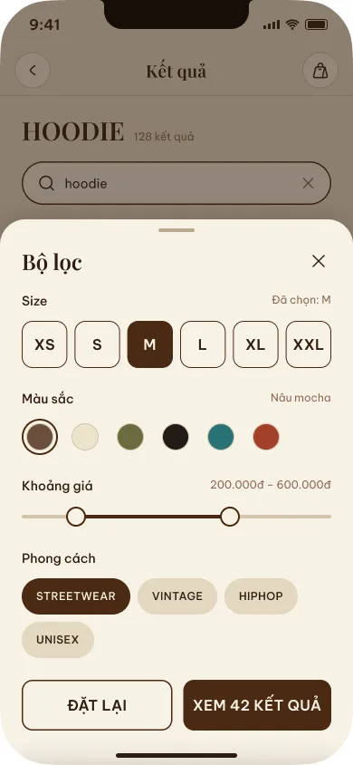
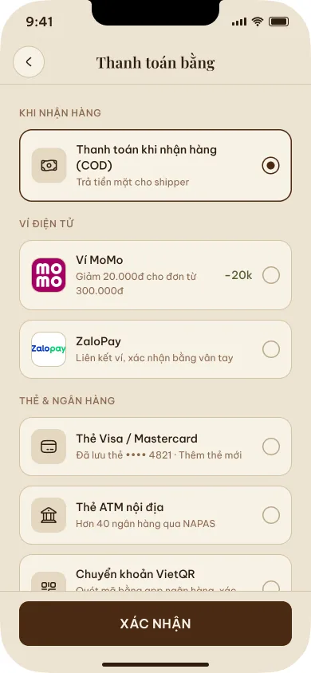
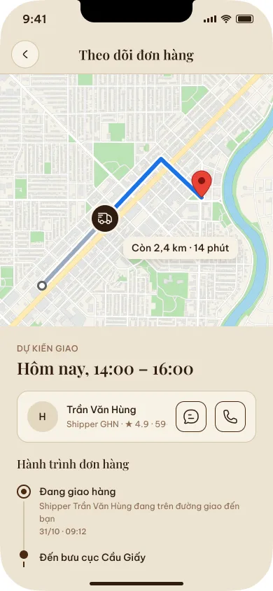

H.HYP
A streetwear shopping app from first launch to returns, in one connected prototype.App mua sắm streetwear từ lần mở đầu tiên tới lúc trả hàng, trong một prototype liền mạch.

- RoleVai trò
- UX/UI designer, course projectUX/UI designer, dự án môn học
- YearNăm
- 20252025
- SizeQuy mô
- 90 screens in 13 flow groups90 màn hình trong 13 nhóm luồng
- SystemHệ thống
- 57 variables, one component library57 biến, một thư viện component
The briefĐề bài
Design a shopping app with every state a real shopper would meet, including the ones nobody puts in a portfolio.Thiết kế một app mua sắm đủ mọi trạng thái người mua thật sẽ gặp, kể cả những trạng thái ít ai đưa vào portfolio.
- StartBắt đầuGet in quickly and tell the app your taste.Vào nhanh và cho app biết gu của bạn.
- BrowseTìmFind something by category or by search.Tìm theo danh mục hoặc từ khóa.
- BuyMuaTrust the product, the address and the payment.Tin vào sản phẩm, địa chỉ và thanh toán.
- AfterSau muaKnow where the order is and how to return it.Biết đơn đang ở đâu và trả lại thế nào.
Checkout, where trust is won or lostThanh toán, nơi được hoặc mất niềm tin

1Three steps, namedBa bước, có tên
Cart, payment, done. The shopper sees how far is left before committing.Giỏ hàng, thanh toán, hoàn tất. Người mua thấy còn bao xa trước khi chốt.
2Addresses follow the new ruleĐịa chỉ theo quy định mới
Ward and city only. Districts left Vietnamese addresses on 1 July 2025, so the form does not ask for one.Chỉ còn phường và thành phố. Từ 1/7/2025 địa chỉ Việt Nam bỏ cấp quận, nên form không hỏi nữa.
3Every block can change in placeKhối nào cũng đổi được tại chỗ
Address, items, shipping and voucher each open as a sheet. The page behind stays in view.Địa chỉ, sản phẩm, vận chuyển và voucher đều mở dạng bảng kéo lên. Trang phía sau vẫn còn đó.
4Total and button never scroll awayTổng tiền và nút không trôi mất
The amount, the saving and the action share one fixed bar, so there is no surprise at the last tap.Số tiền, khoản tiết kiệm và nút nằm chung một thanh cố định, không có bất ngờ ở cú chạm cuối.
Flows, with the rule behind each stepLuồng, và quy tắc sau mỗi bước
Buy a productMua một sản phẩm
The main path, from home to a payment result.Đường chính, từ trang chủ tới kết quả thanh toán.
Seven ways to payBảy cách trả tiền
Different paths, the same result screens.Đường khác nhau, chung màn kết quả.
From launch to the doorstepTừ lúc mở app tới tận cửa nhà










States that have a screenCác trạng thái đã có màn hình
- Empty cartGiỏ trống
- No resultsKhông có kết quả
- No notificationsChưa có thông báo
- Out of stock, notify meHết hàng, báo tôi
- Wrong passwordSai mật khẩu
- Invalid voucherVoucher không hợp lệ
- 3D Secure3D Secure
- ProcessingĐang xử lý
- Payment failedThanh toán thất bại
- Logout dialogHộp thoại đăng xuất
What was deliveredĐã làm được
- A complete path: 90 screens, every state includedMột hành trình đầy đủ: 90 màn hình, đủ mọi trạng thái
- 57 variables and one library, so a change reaches every screen57 biến và một thư viện, sửa một chỗ là đổi khắp nơi
- A prototype with 7 starting pointsPrototype có 7 điểm bắt đầu
Not proven yetChưa được chứng minh
- Run a usability test with real shoppersThử nghiệm với người mua thật
- Replace the placeholder photos and mapThay ảnh và bản đồ giữ chỗ
- Check the wallet screens against each brand’s rulesĐối chiếu màn ví với quy định từng thương hiệu